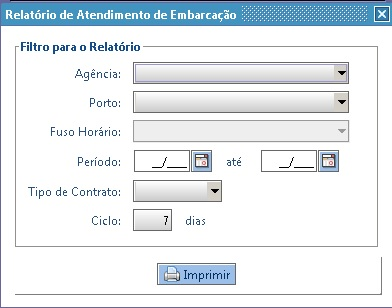
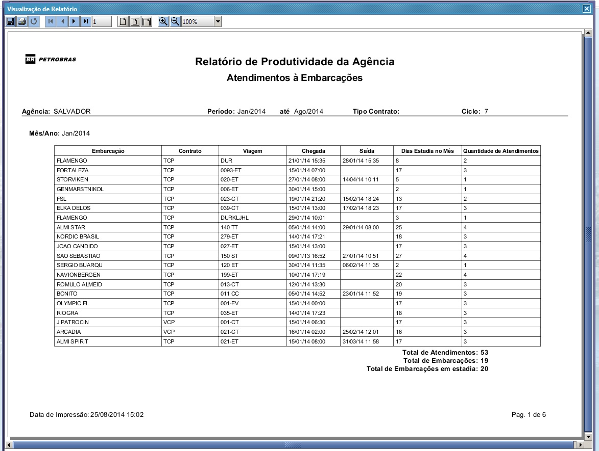

Relatório - Produtividade/Atendimentos às Embarcações
Nesta opção, o usuário deve informar os filtros necessários e gerar o relatório.
Como acessar?
Para acessar esta funcionalidade, basta clicar no menu: , escolher a opção:
O sistema vai exibir a tela com os filtros:

- Agência - Agência Marítima. (campo obrigatório)
- Porto - Após selecionar uma Agência, o sistema vai filtrar os portos. O usuário pode escolher filtrar por um Porto específico ou todos. Campo não obrigatório
- Fuso Horário - Fuso horário do local da Agência.
- Período - Período do agenciamento da Embarcação. (campo obrigatório)
- Tipo de Contrato - Tipo de contrato do Agenciamento.
- Ciclo - Ciclo de dias para contabilizar os Atendimentos. (campo obrigatório)
Após informar os filtros, clicar no botão
Caso tenha dados, o sistema vai exibir o relatório conforme filtro selecionado:

O relatório vem agrupado por Mês/Ano, com as colunas:
- Embarcação - Nome da embarcação agenciada.
- Contrato - Tipo de contrato do Agenciamento.
- Viagem - Número da viagem vindo do SIGO.
- Chegada - Data de Chegada da Embarcação.
- Saída - Data de Saída da Embarcação.
- Dias Estadia no Mês - Quantidade de dias em que a Embarcação permaneceu no mês.
- Quantidade de Atendimentos - Quantidade de atendimentos realizados à Embarcação levando em consideração o ciclo informado no filtro.
O relatório deve exibir os Totais por Mês/Ano:
- Total de Atendimentos - Soma dos Atendimentos à todas Embarcações (baseando na informação do Ciclo).
- Total de Embarcações - Soma das Embarcações que entraram em Agenciamento no Mês/Ano.
- Total de Embarcações em estadia - Soma das Embarcações que permaneceram em Agenciamento no Mês/Ano.